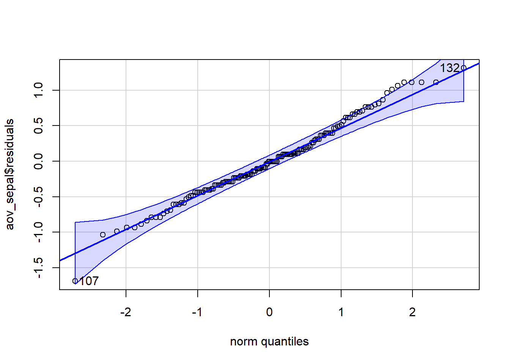
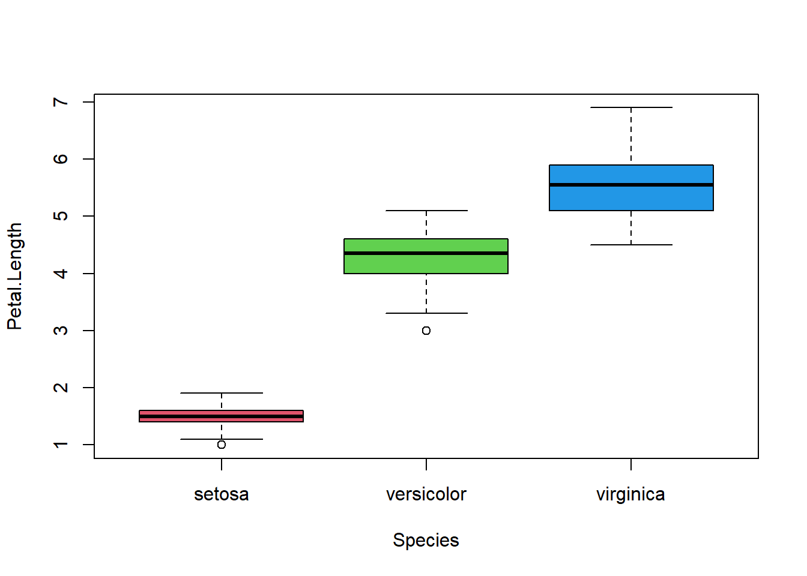

When we want to compare 3 or more groups, the math get’s more complicated. Analysis of Variance (ANOVA) compares how spread out the means are relative to the average within group variation. The formula for the new test statistic, \(F\), is messy, but we can get a sense for what it’s doing visually.
The test statistic is the ratio of the variation between groups and the average variation within groups. The further spread out the sample means are relative to the noise within the groups, the more significant the result.
The F-Distribution
Recall that the shape of the \(t\)-distribution depended on how much data was in the sample. The t-distribution was fatter tailed than the standard normal distribution when n was small. The F-statistic also changes shape. Its shape depends on how many data points are in the sample and how many groups we are comparing. This means the F-distribution has 2 sets of degrees of freedom.
The numerator, or between groups degrees of freedom is \(df_{between}=k-1\), where k is the number of groups you are comparing.
The denominator, or within groups degrees of freedom is \(df_{within}=n-k\) where n is the total number of data points and k is the number of groups.
We can get these degrees of freedom directly from the R output.
Unlike the \(t\)-distribution, the \(F\)-distribution is not centered around zero and can never be negative. \(F\) is the ratio of 2 positive numbers and is, therefore, always positive.
To summarize:
\(F\) is always positive because it is the ratio of 2 positive numbers
\(F\) is always right skewed
\(F\) changes shape depending on the number of groups (numerator degrees of freedom) and the number of total data points (denominator degrees of freedom)
The P-value for an F-statistic is always one-tailed. The probability of observing a test statistic, \(F\), if the null hypothesis is true can be visualized:
In practice, the computer calculates the test statistic, P-value, and degrees of freedom and we interpret the output as with other statistical tests.
Hypothesis Test
The null and alternative hypotheses are always the same for an ANOVA:
\[H_o: \mu_1 = \mu_2 = ...\mu_k\] where k is the number of groups in the data.
\[H_a: \text{at least one } \mu_k \text{ is different}\]Note: The \(F\)-test does not tell us which group is different or how many are different from each other. The \(F\)-test only tells us that something is different.
Test Requirements
Just as with other statistical tests we’ve done so far, the \(F\)-test has certain requirements we must check to validate our P-values. Because of the way we calculate F, we are less concerned with the normality of the individual groups as we are with the variation within the groups.
What to check:
Are the standard deviations of each group “equal”?
Are the residuals normally distributed?
Test Equal Variances
To check the first requirement we can compare the biggest standard deviation to the smallest. If the ratio of the biggest to the smallest is less than 2, we conclude that the population standard deviations are “equal”.
NOTE: Intuitively, this means that if the biggest standard deviation is more than twice as big as the smallest, then we might have cause for concern.
This can be checked using the standard deviations from the favstats() output (see Analysis in R below)
Normality of Residuals
We will discuss residuals in more depth when we cover regression analysis. For now, think of residuals as the deviations of each observation away from their group mean. If our analysis is to be trusted, these deviations need to be normally distributed.
If both requirements are met, then we can trust the P-value.
Analysis in R
Much of the syntax for ANOVA will look familiar, but we will be using a new function, aov() instead of t.test().
The aov() function by itself isn’t as useful as t.test(). However, we can use the summary() function to give us everything we need.
We typically name our output using the assignment operator <- to make it easier to extract the information we would like. The inside of aov() will look familiar, using the same ~ notation we’ve used all semester.
The generic process for performing an ANOVA is:
# Name the ANOVA output:
output <- aov(data$response_variable ~ data$categorical_variable)
# Summarise the ANOVA output to get test statistics, DF, P-value, etc:
summary(output)
Check ANOVA Requirments:
Checking Equal Standard Deviations:
We can use favstats() to extract the standard deviations of each group, then find the ratio of the max/min to see if it is less than 2.
# extract only the standard deviations from favstats using th `$`:sds <-favstats(data$response_variable ~ data$categorical_variable)$sd
Error in favstats(data$response_variable ~ data$categorical_variable): could not find function "favstats"
# Compare the max/min to 2max(sds) /min(sds)
Error: object 'sds' not found
# if max/min < 2, then we're ok
Assessing Normality of the Residuals
We can assess normality of the residuals with a qqPlot(). We first need to extract the residuals from our output:
Error in data$response_variable: object of type 'closure' is not subsettable
qqPlot(output$residuals)
Error in qqPlot(output$residuals): could not find function "qqPlot"
If most of the points fall within the blue zone, we can be confident that the residuals are normally distributed.
Practice Together
Step 1: Read in data
For this demonstration we will be exploring the iris data. This dataset is built in to base R libraries, so we can access it without reading it in using “import”.
Step 2: Review the data
The iris data contains multiple measures on flowers that might be of interest to compare across species.
Let’s first compare sepal lengths between species.
Step 2: Explore the Data
How many species do we have in our dataset?
table(iris$Species)
setosa versicolor virginica
50 50 50
Create a side-by-side boxplot of species and Sepal Length.
boxplot(Sepal.Length ~ Species, data=iris, col =c(2,3,4))
Df Sum Sq Mean Sq F value Pr(>F)
Species 2 63.21 31.606 119.3 <2e-16 ***
Residuals 147 38.96 0.265
---
Signif. codes: 0 '***' 0.001 '**' 0.01 '*' 0.05 '.' 0.1 ' ' 1
Before we make a conclusion, we want to check that we can trust our output. Every statistical test has requirements that must be satisfied if we are to trust our conclusions. For ANOVA, we need to check the normality and that the variation within groups is roughly the same.
We use a QQ-plot to check for normality and the ratio of the largest to the smallest standard deviation to check “equal” variation.
# QQ plots show how closely the the residuals are to a normal distributionqqPlot(aov_sepal$residuals)

[1] 107 132
# Check that there is less than a 2X difference between the largest and smallest standard deviations# We can assign favstats()$sd to a variable to make it easier to use. Recall the "$" can also be used to extract specific output from functionssds <-favstats(Sepal.Length ~ Species, data=iris)$sdmax(sds) /min(sds)
[1] 1.803967
Question: What is the F-statistics? Answer: 119.3
Question: What are the between-groups degrees of freedom? Answer: 3-1 = 2 = Category Df
Question: What are the within-groups degrees of freedom? Answer: 150 - 3 = 147 = Residuals Df
Question: What is the P-value? Answer: <2e-16
Question: What is your conclusion? Answer: P-value is low, reject the Ho.
Your turn!
Let’s go through the same steps but compare Petal Length.
Make a side-by-side boxplot of Petal Length for each species.
boxplot(Petal.Length ~ Species, data = iris, col=c(2,3,4))

State your null and alternative hypotheses:
\[ Ho: u_{se} = u_{ve} = u_{vi}\]
Perform an ANOVA:
aov_petal <-aov(Petal.Length ~ Species, data = iris)summary(aov_petal)
Df Sum Sq Mean Sq F value Pr(>F)
Species 2 437.1 218.55 1180 <2e-16 ***
Residuals 147 27.2 0.19
---
Signif. codes: 0 '***' 0.001 '**' 0.01 '*' 0.05 '.' 0.1 ' ' 1
Question: What is the F-statistics? Answer: 1180
Question: What are the between-groups degrees of freedom? Answer: 2
Question: What are the within-groups degrees of freedom? Answer: 147
Question: What is the P-value? Answer: <2e-16
Check ANOVA requirements (max_sd/min_sd < 2, normal residuals)
pl_sds <-favstats(Petal.Length ~ Species, data = iris)$sdmax(pl_sds) /min(pl_sds)
[1] 3.177945
Question: What is your conclusion? Answer: The ANOVA analysis is not accurate since the ratio between max sd and min sd is bigger than 2